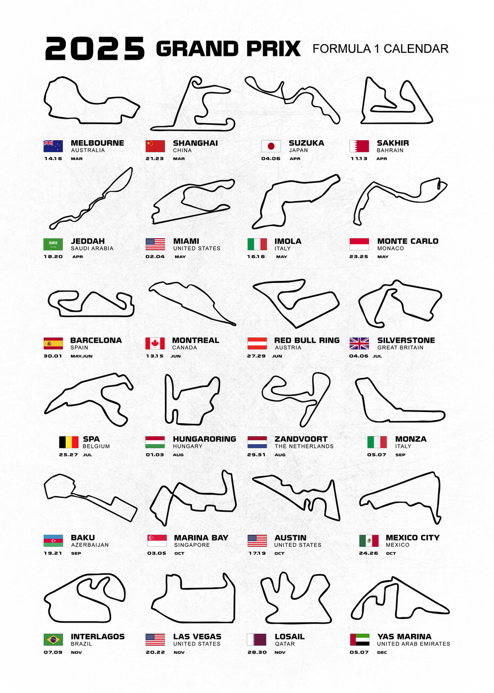

The Thrill of the Season 🏁
Each Formula 1 season takes fans on a global journey across 20+ circuits, from the streets of Monaco to the high-speed straights of Monza. Every track offers a unique challenge—sharp corners, blistering straights, and passionate fans.
Highlights of the calendar include:
- Monaco Grand Prix - Glamour meets racing on the streets of Monte Carlo.
- British Grand Prix (Silverstone) - The birthplace of F1 with legendary history.
- Italian Grand Prix (Monza) - Known as the “Temple of Speed.”
- Abu Dhabi Grand Prix - The dramatic season finale under the desert lights.
Each race adds points to the Drivers' and Constructors' Championships, making every lap crucial. The season isn’t just about speed—it’s about strategy, endurance, and pure determination.
